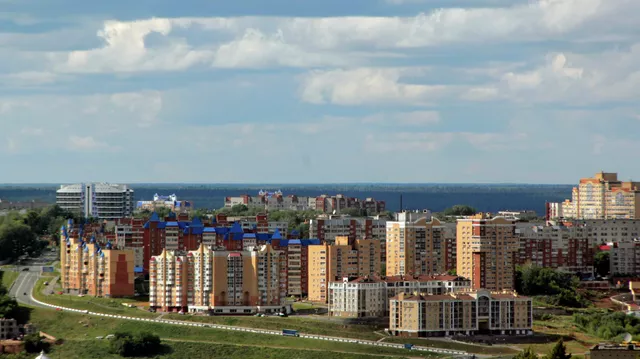
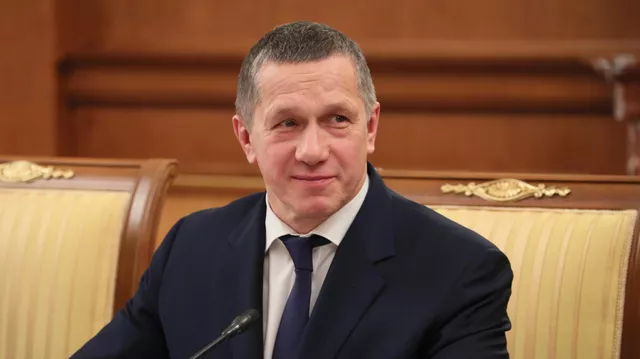
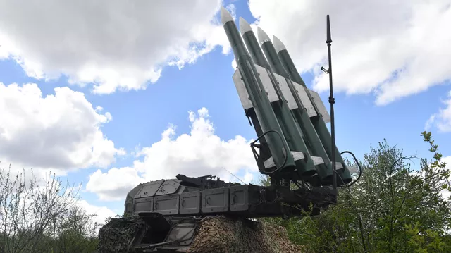
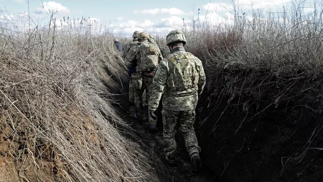
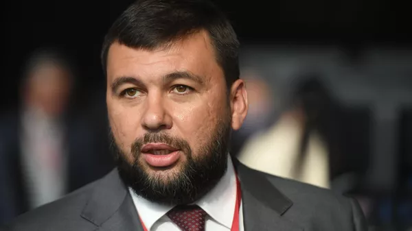
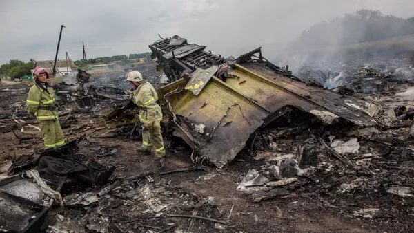

Торе́з( до 1840 — Слобода Алексеевка; до 1857 — Алексеево-Леоново; до 1964 — Чистяково; до 2016 — Торез; ) — город в Горловском районе Донецкой области Украины. Административный центр Чистяковской городской общины. С 2014 года населённый пункт находится под контролем самопровозглашённой Донецкой Народной Республики, где образует Торезский городской совет. Cогласно законодательству Украины является временно оккупированной территорией.





